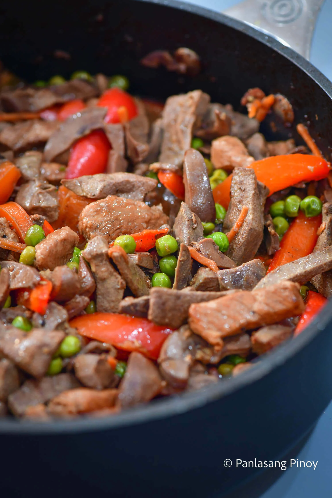

Igado

Ingredients
- 1/2 lbs. pork tenderloin sliced into 2-inch strips
- 1/2 lb. pork liver sliced into 2-inch strips
- 1/2 lb. pork kidney
- 1 Knorr Pork Cube
- 1 red bell pepper cut into strips
- 1/2 cup green peas
- 1 carrot julienne
- 3 laurel leaves
- 1 onion minced
- 5 cloves garlic minced
- 6 tablespoons soy sauce
- 5 tablespoons white vinegar
- 1 1/4 cup water
- 4 tablespoons cooking oil
- Salt and pepper to taste
Instructions
- Boil the kidney with 4 thumbs of ginger for at least 30 minutes. Let it cool down and slice into 2-inch strips. Set aside.
- Heat 2 tablespoons of cooking oil in a pan. Sauté the pork liver for 2 minutes. Remove from the pan and set aside.
- Pour the remaining oil in the pan. Once hot, sauté garlic and onion until the latter softens.
- Add the pork kidney. Cook for 1 minute.
- Add the pork tenderloin. Sauté until the outer layer turns light brown.
- Pour the soy sauce and vinegar into the pan. Let the liquid boil. Stir.
- Add the laurel leaves and pour water. Let boil. Reduce the heat between low to medium setting. Continue cooking for 40 minutes.
- Add Knorr Pork Cube. Cook for 8 minutes.
- Add the liver back into the pan. Stir and continue cooking for 3 minutes. Then, put the bell pepper, carrot, and green peas.
- Season with salt and ground black pepper. Cook for 2 minutes. Transfer to a serving bowl. Serve hot with rice. Share and enjoy!